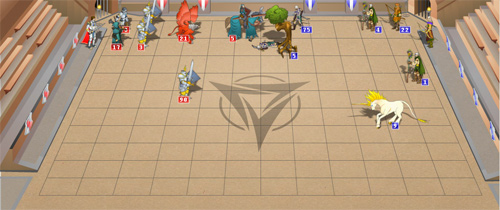

Tournaments
Tournaments represent a system of combats
of one type, same for all players, with a competition in certain field,
often for players of one level. Each player of combat level 3 and above
can participate in tournaments. The participant needs to pay the
admission fee only once. Afterwards, he or she can enlist for
tournament challenges anytime the arena is open, as many times as the
enlisting counter allows.

Tournament agenda:
1) Tournaments are held daily at
8:00~3:00 (24h system) server time for several days, the info about
upcoming or current tournaments can be viewed at the Tournaments
page of the Battles menu.
2) Enlisting for challenges
takes place in Periods, usually every half an hour at H:00 and H:30,
and lasts for 10 minutes. You may check these periods on desired
tournament page when it becomes active.
3) The system arranges opponents
among other participants during the last minute of enlisting. If there
is no opponent to be found, the lord is rejected from the current
challenge automatically.
4) All tournament battles have
rates for higher experience and skill points.
5) The system will not let a
participant get transferred to the next combat level after reaching the
necessary amount of experience. This feature allows the player to
finish the tournament of his or her current combat level. The
experience will still accumulate. However, if the player takes part in
any combat aside the arena, that combat will level the lord up
regardless of the combat results.
6) Players are allowed to
participate at different combat levels in one tournament within one
tournament cycle. Obviously, the lord would need to reach the next
combat level after finalizing his or her participation at the current
one, and then enlist again at his or her current level by paying the
admittance fee.
7) Winners of each tournament
are determined by points gained; there are 3 awarding places in total.
If there are several participants with equal amount of points that took
awarding places, they will split up the reward.
8) During any one tournament,
two players can battle each other only once.
8.1) Multiple characters of one player are
allowed to participate in one tournament, however, the player has to
make sure they do not face each other in one combat. Thus, multiple
characters of one player should not enlist in arena challenges during
the same Period.
Each tournament has its own limitations on
allowed ammunition, total number of battles and defeats. Thus, if the
player does not fit the ammunition requirements - he or she cannot
enlist for tournament challenges. If the number of carried out or lost
combats has reached the limit, the player cannot participate in the
tournament at current combat level anymore.
Tournaments are divided into three types
by admitted ammunition:
1) "Unarmed". Lords can only
enlist for challenges with no artifact equipped at all.
2) "Standard". Lords aren't
admitted to the arena unless they have a minimum set of equipment which
is determined by the sum of AP (ammunition points) of worn artifacts.
Only shop
artifacts are allowed. Enchanted artifacts (Enchanters' guild) are
allowed, but the enchantments have no effect on this arena.
3) "Free-for-all". Lords can
enlist regardless of the items they currently wear. Enchantments do
have effect in these types of tournaments.
Types of tournaments
Minor tournament
This tournament features 1 vs 1 duel challenges. During the tournament,
two characters can face each other in the Arena only once. Each victory
grants 1 point. Defeats or draws do not yield points.
Paired tournament
This type of tournament features group 2 vs 2 battles only. Any lord
may choose to take part in tournament combats as random participant or
a preset team.
To participate as a preset team, your partner must be added to your friends
list, and then chosen as partner when enlisting in the
tournament. Enlisting as preset team will be completed only
if both partners enlist as team with each other within a short period
of time.
To join as random participant, select that option and enlist.
It is possible to participate as both within one tournament cycle,
there are different credits and rewards for random and preset team
participation.
For players' commodity, there is an additional chat room during Paired
tournament periods, where players may find partners for preset teams.
To access it, click the "Look for partner" button on tournament page.
Participants who successfully passed the
Commanders' guild trial receive 1.2 guild points per victory in
tournament combats (defeat does not yield guild points).
Paired Tournament Plus
This type of tournament features the same combat system as Paired
Tournament, but the awards are given out differently.
Paired Energy Tournament
This type of tournament features the same format as Paired Tournament
except for the following:
- Units are recruited into your army by
spending crystals;
- Talents are ignored;
- Faction skills and faction levels are ignored;
- Only shop artifacts may be equipped, and any enhancements are ignored;
- Crystals must be spent on recruiting units and/or boosting their
stats so that no more crystals are left available to spend;
- The starting number of crystals depends on the lord’s level. Every
morning before the tournament resumes, the number of crystals increases
for all contestants regardless of their number of victories, so that
all battles and tactics change from day to day for every combat level.
Mixed tournament
This tournament features unique group battles with random player
allocation, which are not easy to organize under usual circumstances.
For instance, during this tournament, a level 5 Lord and a level 15
Lord might appear together facing three Lords of combat level 9. The
teams are allocated in such a way that the battle is as interesting and
balanced as possible for each team. After each combat, the coefficients
of power are automatically corrected to avoid unbalanced combats in
future.
Mixed Tournament Plus
This type of tournament features the same combat system as Mixed
Tournament, but the awards are given out differently.
Mixed Dark Tournament
This type of tournament features the same format as Mixed Tournament
except for the following:
- Awards are given out differently;
- Six approximately equal-strength lords are matched together,
accounting for their factions and combat levels;
- The combatants’ nicknames are hidden.
Blindfold tournament
Blindfold tournament uses blindfold battles as a template: 6 players,
"every one for oneself" battle types.
Since 6 characters need to enlist in order to start a tournament
combat, up to five last enlisted characters may be rejected. Those who
enlisted earlier have better chances to get into battle.
Any given group of six participants can encounter in one combat only
once. The first to leave the battlefield gets 0 points, the second - 1
point, and so forth with the winner being awarded 5 points.
Each character gains a new parameter for the duration of the
tournament, which gives evidence of the player's tournament
participation efficiency. This parameter is visible to every
participant of any tournament combat. The formula for this parameter is
[efficiency] =
[tournament points gained] / [number of tournament combats] / 5 * 100%.
If a player does not take offensive actions continuously, the troops
begin to act independently. In order to reduce the probability of
troops' waywardness or to regain control over independent ones, it is
necessary to move, attack or use an ability with them.
There are certain peculiarities with this tournament type:
- Current combat id is concealed;
- Tournament combats are concealed in the battle list;
- Tournament combats are not displayed in combat logs until the
tournament is over;
- Participants' nicknames are concealed in combats;
- Tournament combat replays are only available to its participants;
- Participants who successfully passed the Commanders' guild trial
receive 0.3 guild points per tournament point;
- There is a neutral Darkness tower on the arena. Every time it gets
its turn, it casts a random Darkness school group spell (except Decay)
targeted at all stacks of the character whose troops count least
casualties.
Team blindfold tournament
This tournament is a slightly changed blindfold one. Same template, 6
characters of equal combat level fight in a blindfold arena, however,
there are 3 teams of 2 players in each, one being players, and the
other two teams being AI groups, the "Alec brigade" and the "Rayzar
squad". The interesting point of this tournament is that you do not
initially know which of your five opponents is a human player, i.e.,
your temporary "team member". Player characters still receive 0 to 5
points depending on how long they last on the battlefield; but in
addition to personal "efficiency" there is also a "side credit", and
only one side which ends up getting the most total tournament points
will get prizes.
As with the blindfold tournament, all combat identification is
concealed, and participants who have successfully passed the
Commanders' guild trial receive 0.3 guild points per tournament point.
Survival tournament
This tournament is PVE-oriented. Players compete fighting off hordes of
neutral creatures that attack them non-stop. The battles begin with
characters in the middle of the Arena, like a thief ambush event. Swarm
creatures come from all 4 sides in waves of 1-4 stacks. After a wave is
destroyed, a next one, harder than the previous one appears. The number
of waves is unlimited, thus, it is impossible to win the tournament
combat; players compete in how long they survive and how much damage
they deal to the swarm.
Every waves, an Orb of Illusions appears on the arena battlefield. The
Orbs are activated once one of your stacks occupies the corresponding
battlefield tile. After activating the Orb, you will benefit of a
random effect such as: additional creature stack; allied stack
resurrection; extra shots to shooters; mana recovery to character or
creature stack; attack or defense increase of a stack.
|
Orb of Reinforcement
Additional stack of allied creatures steps into the arena
|
Orb of Resurrection
75% of perished creatures are resurrected in active stack
|
Orb of Ammo
Active stack receives 5 shots if it is a shooter
|
|
Orb of Mana Replenishment
Active stack receives 25 mana if it is a caster, otherwise the
character does.
|
Orb of Attack
Active stack increases its attack by 10
|
Orb of Defense
Active stack increases its defense by 15
|
There is an allied Lightning tower on the arena. It discharges a "Chain
lightning" spell targeted at one of the enemy stacks if three turns
after each wave appears, there are still remnants of that wave on the
battlefield.
Each player has only
five attempts in total. The amount and order of ambushing
neutrals is the same in all combats for all players of a given level.
For that reason, for the duration of a Survival tournament it is
impossible to view other players' combats or replays. Each
player is rewarded according to his or her results not only at his or
her combat level, but faction as well. Thus a perfect strategist would
be able to win the tournament up to 5 times at any given level, if he
or she gets the highest score with every faction attempted.
Results are not cumulative, only the highest score will be counted per
faction.
"Mana recovery" talent and "Spirit link"
used on Vampires have no effect in battles of this tournament.
Insight tournament
This fun tournament allows all players to compete at how well they know
certain faction and certain class. It will feature survival-like
tournaments with waves of incoming creatures, but faction, class, army,
stats and talents are preset for all characters of their combat level
regardless of their current faction.
Players have 5-9 attempts (may differ in each individual insight
tournament) to score highest in any one battle. The amount
and order of ambushing neutrals is the same in all combats for all
players of a given level. For that reason, for the duration of a
Survival tournament it is impossible to view other players' combats or
replays. Rewards are separate for each combat level.
Note that regardless of current faction,
participants will earn skill points for the faction they represent in
the insight tournament.
Throne Battle
This type of tournament allows players to practice controlling
creatures recently introduced into the game. The combats occur without
artifacts, talents, skills and Guild bonuses. Each character of one
faction will have an exact same appearance including army sets,
regardless of the combat level, their parameters also being absolutely
same. Characters of combat level 5 and above can take part in such
tournament.
Due to such combats being unbalanced, there are no prizes set nor
winners registered. The purpose of this tournament is solely testing
the new creatures in play and having fun.
Quick tournament
This regular tournament type features dropout system auto-combats where
all creatures are controlled by the AI. Combat types are 1 vs 1, 2 vs 2
and 3 vs 3, and ammunition type is free-for-all. Enlisting in this
tournament guarantees participation; should there be lack of player
characters enlisted, AI "Alec brigade" mercenaries fill in the blank
spots.
Each time a tournament combat starts, the player manually settles his
or her troops and chooses between offensive and defensive behaviour in
combat.
With offensive, melee creatures move forward and attempt to engage in
melee combat whenever possible, shooters shoot, lords cast more
supporive spells.
With defensive, melee creatures hold back and defend rather than
engaging in melee, shooters shoot, lords cast more damaging spells.
Player ammunition is entirely up to the
player as long as it is above the minimum AP required for the
tournament and has enough durability to endure the maximum amount of
battles (up to 5 for 1 vs 1; up to 4 for 2 vs 2 and 3 vs 3). Note that
Alec brigades can wear enchanted artifacts, just as player characters.
The tournament schedule is as follows:
| Type |
Time |
| 1
vs 1 |
17:10 |
| 2 vs 2 |
10:10
20:10 |
| 3 vs 3 |
14:10
22:10 |
On the days when other non-regular
tournaments are held, the time of quick tournaments is shifted by 10
minutes to XX:20.
Rewards
After the tournament is over, results are processed, winners defined
and rewards distributed.
I. Minor, Blindfold, Team
blindfold, Paired Tournaments
1. Empire
sets a basic prize and an incentive prize for every tournament.
2. The basic prize can consist of gold and diamonds. The incentive
prize can only consist of gold.
3. 20% of all enlisting fees are added to the basic prize. 80% of
enlisting fees are added to the incentive prize.
4. Main prize on each level is split into 50%, 30% and 20% and
distributed between 1st, 2nd and 3rd places respectively.
5. Incentive prize is split equally between top 10% participants.
In team blindfold
tournament, there are two credits, individual and team ones.
For paired tournament, both main and incentive prizes are split in half
for random and preset team prizes. After that each of the two halves is
dispensed according to paragraphs 4 and 5.
I.I. Paired Tournament Plus
All entry fees contribute to the main prize fund. There is no bonus
fund, and no special awards are allocated for the best 10% contestants.
Prizes are only awarded to those who reach the required number of
victories, in any number of attempts:
Gold: 15 victories with a win rate of 90%
Silver: 15 victories with a win rate of 80%
Bronze: 15 victories.
II. Survival, Insight Tournaments
1. Empire
sets a basic prize and an incentive for every tournament.
2. Both prizes consist of gold.
3. 20% of all admission fees are added to the basic prize.
4. 80% of admission fees are added to the incentive prize.
5. Main prize on each combat level is divided into 9 equal parts, by 9
factions. Then each part is split into 50%, 30% and 20% and distributed
between 1st, 2nd and 3rd place of each faction respectively.
6. Incentive prize is split equally between top 10% participants of
every faction.
Example: 68 Knights, 32 Necromancers, 43
Wizards, 81 Elves, 54 Barbarians, 77 Dark elves and 60 Demons took
place in the tournament. Top 6 Knights, Top 3 Necromancers... Top 6
Demons will split up the Incentive prize evenly.
7. 10, 8 and 7 HG points are awarded to 1, 2 and 3 place respectively.
Every other top 10% participant gets 5 HG points. The bonus points
cannot exceed 15 HG points per character at any given tournament.
III. Mixed tournament
1. Empire
sets the basic prize for every tournament.
2. 100% of all admission fees are added to the basic prize to form the
main prize.
3. Main prize is distributed between the 1st, 2nd and 3rd place
participants in a 50% / 30% / 20% ratio.
More specifically, 1st place players receive 0.5*X gold each, 2nd place
players receive 0.3*X each, 3rd place players receive 0.2*X each, where:
|
Main
prize ; |
|
X=
|
|
(I*0.5+II*0.3+III*0.2)
|
I - total amount of players winning 1st place;
II - total amount of players winning 2nd place;
III - total amount of players winning 3rd place.
III.I. Mixed tournament plus
The achievements are available to any hero who collects enough
victories, in any number of attempts. The achievement rank is
determined by how many times the player is defeated in 20 battles:
Gold: 20 victories with a win rate of 90%
Silver: 20 victories with a win rate of 80%
Bronze: 20 victories.
IV. Quick tournament
1. Empire
sets the prize for every tournament.
2. The prize is split into 60%, 20% and 2x10% and distributed between
the 1st place, runner-up and semi-finalist teams respectively. Every
team then splits their prize share evenly between its members.
Card tournaments
Regular Blitz card tournaments are held in Empire taverns. Tournaments
start every half an hour, any player to lose a card game drops out of
the tournament. The prize consists of three parts, awarded to the
winner, the runner-up, and the third part divided equally between two
semi-finalists.
Tournament games have a turn limit of 20 seconds, and a game limit of
10 minutes. If the game limit time runs out, whoever has higher tower
wins the game. All games are played by Empire Capital rules.
Winners are awarded with achievements to their character information
page besides gold prize.
Types and agenda of card tournaments
| |
Tournament
title |
Number
of
participants |
Participation
cost |
Prize |
Duration |
Time |
| 1st place |
2st place |
tier-ups |
|
Gamblers League |
64 |
1.000 |
36.000 |
12.000 |
6.000 |
Up to 60 min |
00 and 30 min
hourly
(when no other
tournaments held) |
|
Golden Deck
Tournament |
128 |
2.000 |
150.000 |
50.000 |
25.000 |
Up to 70 min |
00:00, 11:00,
15:00, 21:00
daily |
|
Sunny City Cup |
256 |
2.000 |
300.000 |
100.000 |
50.000 |
Up to 80 min |
12:00, 18:00
daily |
There are rumours of soon-to-be-held legendary "Empire Cup" – a
tournament with a huge prize, which would only be accessible by winners
of other tournaments.
Current and upcoming tournaments may be checked in Tavern.
|